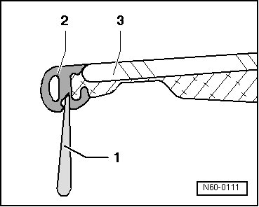
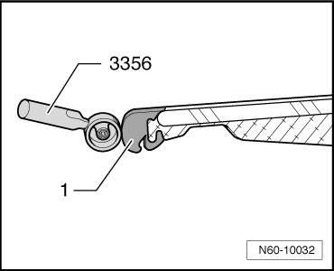

Sunroof / Moonroof Weatherstrip: Adjustments
Sunroof with Glass Panel
Panel Seal, Adjusting
- Using a strip of cardboard about 0.3 mm thick (for example, a business card), check if pretension between panel seal - 2 - and body is even all around. Cardboard should slide through gap with firm resistance.

- Removing glass panel for sunroof, refer to --> [ Sunroof Glass Panel ] Sunroof with Glass Panel
- If pretension is insufficient, the panel seal - 2 - can be pressed open with a trim removal wedge (3409) - 1 -.
- If the pretension is excessive, press the panel seal - 1 - closed around circumference using application roller (3356).

• Glass panel - 3 - must be removed before adjusting seal.